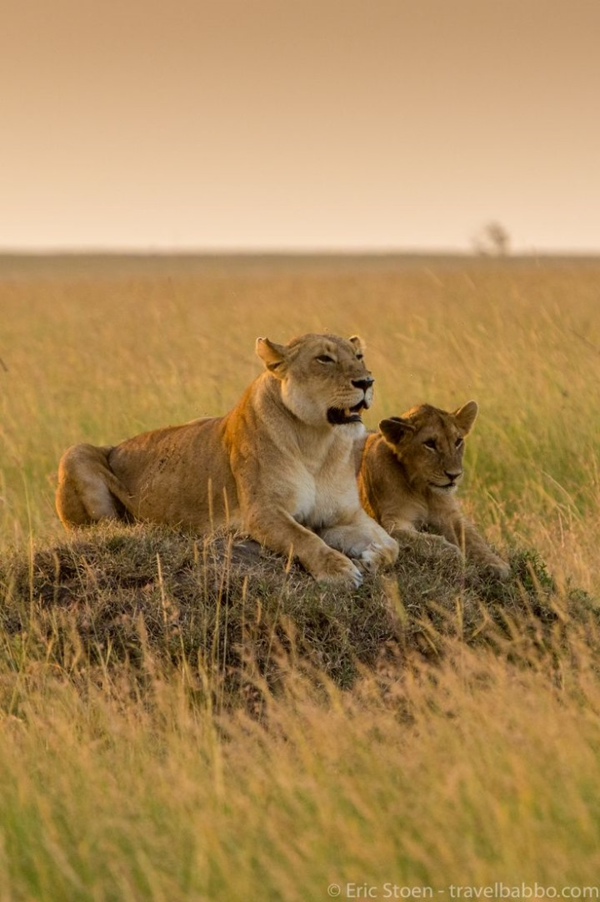

Le Kenya est un pays de l’Afrique orientale connu pour ses zones montagneuses, ses régions lacustres et ses parcs nationaux. Cette nation aux innombrables trésors culturels et naturels est la destination par excellence pour faire des safaris. Elle fait partie des pays les plus attractifs et les plus visités du continent. Caractérisé par ses hauts plateaux spectaculaires, le Kenya regorge de nombreuses merveilles qui s’étendent du nord au sud de son territoire.Lorsque vous voyagez au Kenya pour découvrir ses merveilles, n’oubliez pas de vous immerger dans la richesse culturelle de sa population. Vous garderez de beaux souvenirs de vos rencontres avec les citoyens kenyans. Ce peuple accueillant et fascinant par ses traditions anciennes est toujours curieux de rencontrer des citoyens étrangers.Par ailleurs, le Kenya est aussi très riche en danses ethniques traditionnelles pratiquées comme rituels religieux et en musiques folkloriques avec en tête le chant et la percussion. L’artisanat quant à lui se décline sous une infinité de formes. Les peuples fabriquent divers éléments comme les objets en pierre de savon, les bijoux maasaïs, les pagnes colorés et les paniers en sisal.

Dans le monde occidental, safari signifie généralement l’observation d’animaux sauvages dans leur propre habitat. Mais à l’origine, il s’agit d’un mot swahili qui fait référence à un voyage ou à une excursion. La bonne nouvelle, c’est qu’avec nous, vous partez en safari (voyage) pour voir beaucoup d’animaux sauvages ! Les animaux de safari les plus populaires sont les Big Five : lions, éléphants, buffles, léopards et rhinocéros. Mais les parcs nationaux du Kenya abritent également d’innombrables autres espèces animales impressionnantes et des centaines d’espèces d’oiseaux magnifiques et colorées. Vous pouvez les voir tous avec Safari en Afrique ! Sachez que les animaux sont plus actifs au lever et au coucher du soleil. À ces moments, les températures sont agréables et les animaux sont à la recherche de nourriture. Les chances de voir les animaux en action sont meilleures à cette période. Mais au milieu de la journée, il y a encore beaucoup d’animaux sauvages à voir. Votre guide privé se fera un plaisir de vous parler des animaux, des oiseaux et des plantes que vous rencontrerez lors de votre safari en Jeep 4×4 Land Cruiser avec toit pliant. Nous proposons uniquement des safaris privés, ce qui signifie que vous ne partagez pas la voiture avec d’autres personnes. C’est vous qui décidez quand le safari commence et se termine. En concertation avec votre guide, vous pouvez décider du programme de la journée. Par exemple, si vous avez soudainement envie de terminer la journée à la piscine, ce n’est pas un problème. Avec un peu de chance, vous pourrez même y apercevoir des animaux sauvages. Visitez les tribus locales Pendant le safari au Kenya, il est possible de visiter des tribus dont le mode de vie est toujours traditionnel. La tribu la plus célèbre à visiter est la tribu Maasai. Il s’agit d’un peuple nomade qui vit de son bétail. Ils ornent leur corps de magnifiques bijoux en perles, portent de longues lances à la main et sont enveloppés dans des shukkas (sorte de couverture) rouge vif. Ils vivent dans des huttes semi-permanentes – appelées manyattas – faites d’herbe et de bouse. Lors de danses traditionnelles, ils se mettent au défi de sauter le plus haut possible tout en gardant le corps droit. Une autre tribu intéressante à visiter est celle des Samburu, qui sont similaires aux Maasai mais vivent autour de la réserve nationale de Samburu alors que les Maasai vivent plus près de la frontière tanzanienne.Avec pas moins de 24 parcs nationaux, 15 réserves naturelles, 6 parcs marins et de multiples zones de conservation privées, faire un safari au Kenya est l’occasion parfaite de voir une incroyable diversité d’animaux. On y trouve notamment le Big Five et le Special Five, qui représente les cinq espèces d’animaux rares endémiques du Samburu
Le Kenya, c’est bien sûr toute la magie des grands espaces naturels qui abritent une vie sauvage incomparable, mais c’est aussi tout un monde de culture(s) à découvrir en séjournant dans ses villes modernes et attrayantes et lors de rencontres avec ses peuples aux origines diverses qui composent une population accueillante.Au Kenya, hospitalité rime avec respect, empreint d’une certaine pudeur. Vos clients y rencontreront des femmes et des hommes désireux de leur faire partager les différents aspects de leur vie quotidienne et par ailleurs curieux de connaître les leurs. La visite des marchés est à cet égard une occasion privilégiée pour nouer des contacts. Mais une immersion dans un ou plusieurs villages (avec possibilité de séjour) des communautés ethniques permet d’appréhender au plus près toutes les subtilités des traditions de ces peuples qui pour certains vivent hors du temps.La population du Kenya regroupe trois ethnies différentes composées chacune de plusieurs communautés. Le groupe le plus important est d’origine bantoue (Kikuyu, Kamba, Luhya, Meru…), viennent ensuite celui d’origine nilotique (Masaï, Kalenjin, Luo, Samburu, Turkana, Pokot…) et celui d’origine couchite (Rendille, Somali, Orma, Borana…). Les Maasaïs, qui représentent moins de 2 % de la population kenyane, font partie de l’imaginaire de chaque voyageur. Ce sont des pasteurs (et d’excellents pisteurs) semi-nomades qui élèvent du bétail (bovins, chèvres, moutons). Ils sont reconnaissables à leurs silhouettes longilignes parées de tenues colorées (souvent rouge) avec des colliers, boucles d’oreilles et des bracelets de perles. Ils accueillent les touristes dans leurs villages construits en rond pour leur faire partager leurs traditions, dont leurs danses. Il convient de s’informer au préalable si cette démarche est bien organiser de manière responsable.
Si les Kényans surpassent si facilement leurs compétiteurs, c’est aussi parce que la course est une échappatoire à la pauvreté. L’étude du chercheur Vincent Onywera a montré que sur les 404 athlètes sondés, 33% couraient d’abord et avant tout pour gagner de l’argent. « Je cours pour améliorer mon style de vie et changer la communauté d’où je viens », confie d’ailleurs Cornelius Krop Kapel. Cela laisse dire à Fabien Abejean, psychologue sportif montréalais, que la conception du sport et les sources de motivation diffèrent selon les régions du globe. « Dans les pays d’Afrique et d’Asie, le sport peut être un vecteur d’ascension sociale », indique-t-il. Et personne n’incarne mieux cet espoir que Kipchoge, Kimetto et leurs prédécesseurs. Leurs exploits nourrissent l’imagination de leurs émules qui aspirent au même destin, voire mieux : devenir celui qui réussira à courir un marathon sous la barre mythique des deux heures !
Les Kenyans célèbrent également plusieurs dates et journées fériées civiles et officielles. En plus des fêtes internationales, les Kenyans célèbrent le 1er juin le Madakara day, journée de l’autonomie du pays. Des parades sont organisées dans les grandes artères de la capitale. Chaque 12 décembre, ils fêtent en grande pompe le jour d’indépendance. Des événements, parades et défilés sont ainsi organisés à travers tout le territoire du pays. Parmi les journées officielles célébrées au Kenya, vous pouvez assister aussi à la fête de Moi chaque 10 octobre. Les Kenyans commémorent à cette date leur deuxième président, Daniel Moi, ayant régné sur le pays de 1978 à 2002. Sur le plan religieux, les populations catholiques célèbrent, à l’image de tous les chrétiens, Pâques et Noël. Idem pour les musulmans qui fêtent leurs principales fêtes, Aid El Fitr et la fin du mois de jeûne.